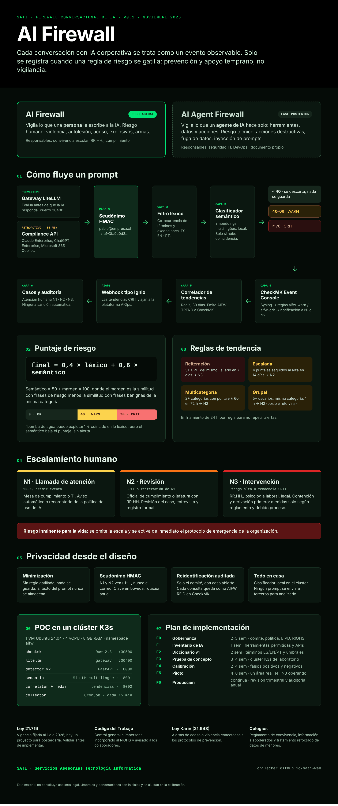

AI Firewall
Vigila lo que una persona le escribe a la IA. Riesgo humano: violencia, autolesión, acoso, explosivos, armas.
Para convivencia escolar, RR.HH. y cumplimiento.
Producto SATI · En desarrollo
Cada conversación con IA corporativa se trata como un evento observable. Solo se registra cuando una regla de riesgo se gatilla: prevención y apoyo temprano, no vigilancia.
Vigila lo que una persona le escribe a la IA. Riesgo humano: violencia, autolesión, acoso, explosivos, armas.
Para convivencia escolar, RR.HH. y cumplimiento.
Vigila lo que un agente de IA hace por su cuenta: herramientas, datos y acciones. Riesgo técnico: acciones destructivas, fuga de datos, inyección de prompts.
Para seguridad TI y DevOps.
Gateway corporativo (preventivo) y APIs de cumplimiento de Claude Enterprise, ChatGPT Enterprise y Microsoft 365 Copilot (retroactivo).
La identidad se reemplaza por un código HMAC antes de cualquier análisis.
Co-ocurrencia de términos de riesgo con excepciones. Español, inglés y portugués.
Modelo local que distingue "bomba de agua" de una amenaza real. Ningún prompt sale a terceros.
Bajo 40 se descarta y nada se guarda. Desde 40 es aviso; desde 70, crítico.
El evento llega a la consola de monitoreo que el área de TI ya opera.
Un correlador detecta patrones en el tiempo y escala a una capa AIOps.
Niveles N1, N2 y N3. Ninguna sanción es automática.
El componente semántico compara el mensaje con frases de riesgo y frases benignas de la misma categoría.
Mesa de cumplimiento o TI. Recordatorio de la política de uso de IA.
Cumplimiento o jefatura con RR.HH. Revisión del caso, entrevista y registro formal.
RR.HH., psicología laboral y legal. Primero contención y derivación; medidas solo según reglamento y debido proceso.
Riesgo inminente para la vida: se omite la escala y se activa de inmediato el protocolo de emergencia de la organización.
Sin regla gatillada, nada se guarda. El texto del mensaje nunca se almacena.
Los equipos N1 y N2 ven un código, nunca el nombre ni el correo.
Solo el comité, con un caso abierto. Cada consulta queda registrada.
Corre en tu propio clúster. El análisis no depende de servicios externos.
Se integra con la monitorización que tu equipo ya usa, en lugar de sumar otra consola.
Protección de datos personales. Se valida su vigencia antes de cada implementación.
Control general e impersonal, incorporado al RIOHS e informado a los colaboradores.
Alertas de acoso o violencia conectadas a los protocolos de prevención.
Reglamento de convivencia, información a apoderados y tratamiento reforzado de datos de menores.
Esta página no constituye asesoría legal.

Toca la imagen para abrirla en tamaño completo.
Conversemos sobre una prueba de concepto en tu infraestructura, partiendo por la gobernanza y el marco legal.